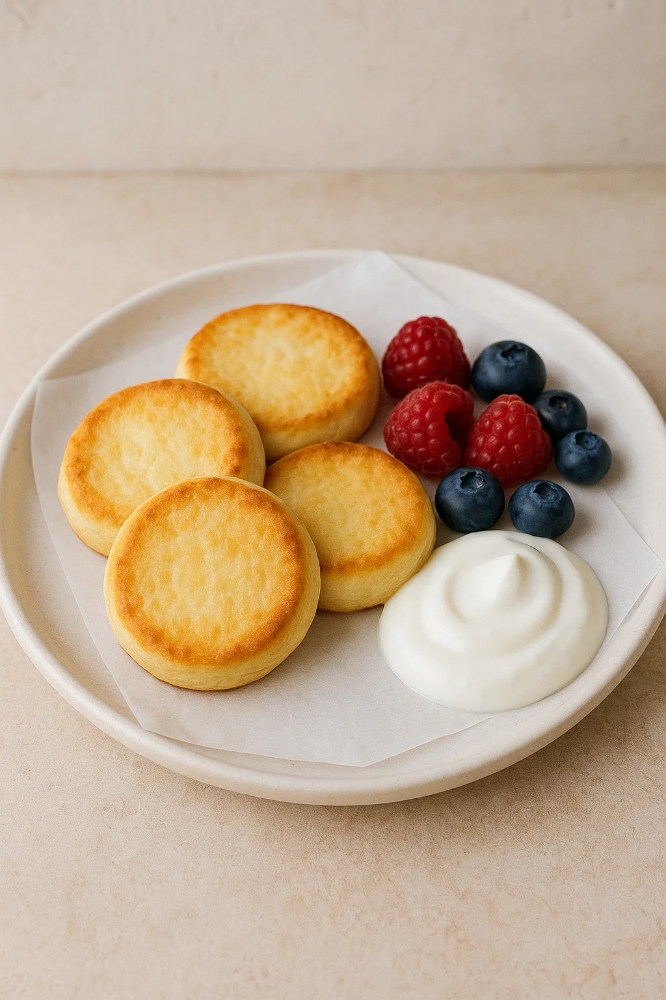
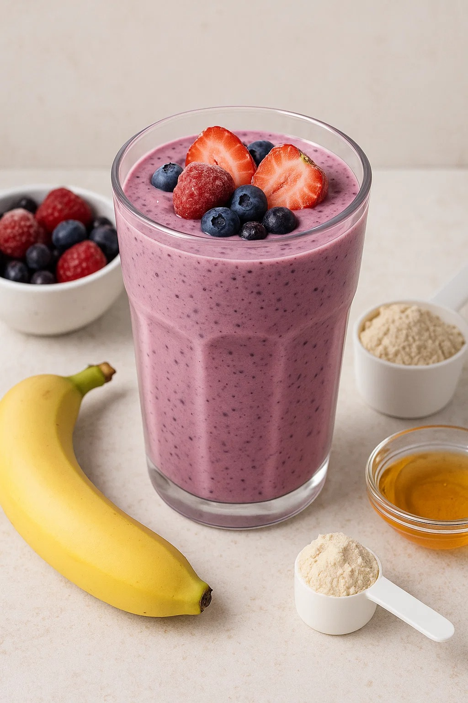

День 1: Овсяноблин с курицей и шпинатом
≈ 350 ккал
Ингредиенты:
- 40 г геркулеса
- 1 яйцо
- 100 г отварной куриной грудки
- 50 г шпината
- Соль, перец
Приготовление:
- Смешайте овсянку, яйцо и немного воды.
- Испеките блин 2–3 мин с каждой стороны.
- Добавьте курицу и шпинат, сложите блин.
- Прогрейте минуту и подавайте.

День 2: Тунец с киноа и овощами
≈ 400 ккал
Ингредиенты:
- 100 г киноа (сухого)
- 120 г тунца (конс.)
- ½ болгарского перца
- ½ огурца
- Лимонный сок, соль, перец
Приготовление:
- Отварите киноа 15 минут.
- Смешайте крупу, овощи и тунца.
- Заправьте соком лимона и специями.

День 3: Творожные сырники в духовке
≈ 300 ккал
Ингредиенты:
- 200 г нежирного творога
- 1 яйцо
- 2 ст. л. цельнозерновой муки
- 1 ч. л. мёда
- Ваниль
Приготовление:
- Смешайте все ингредиенты.
- Сформируйте сырники, выложите на пергамент.
- Выпекайте 20–25 мин при 180 °C.

День 4: Лосось с брокколи и бататом
≈ 450 ккал
Ингредиенты:
- 150 г филе лосося
- 200 г брокколи
- 150 г батата
- Оливковое масло, соль, перец, лимон
Приготовление:
- Батат нарежьте кубиками, отварите до мягкости.
- Брокколи бланшируйте 2 мин.
- Лосося приправьте, запеките 12–15 мин при 200 °C.

День 5: Индейка с гречкой и грибами
≈ 400 ккал
Ингредиенты:
- 100 г гречки (сухой)
- 150 г фарша индейки
- 100 г шампиньонов
- 1 луковица
- Соль, перец, чеснок
Приготовление:
- Отварите гречку.
- Обжарьте лук и грибы, добавьте индейку, готовьте 7 мин.
- Смешайте с гречкой и прогрейте 2 мин.

День 6: Салат с куриной грудкой и авокадо
≈ 350 ккал
Ингредиенты:
- 120 г отварной куриной грудки
- ½ авокадо
- 50 г микса салата
- 10 г семян тыквы
- Лимонный сок, оливковое масло, соль, перец
Приготовление:
- Курицу и авокадо нарежьте кубиками.
- Смешайте с салатом и семенами.
- Заправьте маслом и соком лимона, приправьте.

День 7: Протеиновый смузи с ягодами
≈ 250 ккал
Ингредиенты:
- 150 г замороженных ягод
- 1 банан
- 200 мл нежирного кефира/йогурта
- 1 мерная ложка протеина
- Мёд — по вкусу
Приготовление:
- Поместите всё в блендер.
- Взбейте до однородности и подавайте.